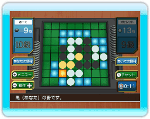

17 |
Wi-Fi対戦について |
 |

Wi-Fi対戦には、対戦を楽しむための様々な内容が用意されています。
制限時間は自分の手番のときに画面右に表示されており、制限時間内に打たなかった場合は、コンピュータが適当なマスに石を置きます。
投了した場合、この対戦に負けたことになります。 また、投了ができるのは自分の番のときだけです。
「チャット」ボタンまたは１ボタンを押して、チャットメッセージウィンドウを表示します。 発言したいメッセージを選ぶと、自分の画面と相手の画面に選んだメッセージが表示されます。
また、対戦相手のウィンドウには、対戦相手が設定したウィンドウが表示されます。
レートは１５００からスタートし、勝つと増え、負けると減っていきます。 自分よりレートが高い相手に勝つと多く増えますが、低い相手に勝ってもあまり増えません。逆に自分よりレートが低い相手に負けると、多く減ってしまいます。
段位は10級から始まり、条件を満たすことで昇格していきます。また、段位に見合わない条件になった場合は降格することもあります。
オセロポイントが増えていくことによって、段位が上がったり、使用できる背景やフレームなどが増えていきます。対戦に勝った場合の方が、負けた場合より多くもらえます。 投了や通信の切断などによって対局が途中で終った場合は、少ないポイントしか増えないか、場合によっては全く増えないこともあります。
手に入れた称号は、自分の情報ウィンドウに表示させることができます。 |
 |
 |
 |